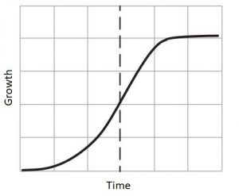

The Core of any Business
People don’t make more mistakes in management from wrong answers to right questions but from right answers to wrong questions, yet people generally spend more time finding the answer than identifying the relevant questions.
3 Pillars of Startup
- Expertise
- Resources
- Aspirations
Should we adapt to find the strategy according to the resources or make the strategy and then identify the resources?
In a technical project – the priority of the founders and team are restricted by the finances as they are generally limited and way below the requirement. Let’s see on what principles strategy can be prepared.
Four Fundamentals of Strategy
-
Victory
Your goal must be not to be a marginal competitor expecting to hold 1 or 2% of the market share, it is equivalent to making the ambition marginal and also admitting implicitly that your innovation is not so powerful and attractive.
-
Build on strengths
Identify the key strengths of your project/innovation, the characteristics that make it competitive and winning. Look for the points of differentiation which will make the difference with competitors. Invest in these key strengths to increase the difference.
Try to identify the weakness that makes you a real handicap against your competitors and invest to eliminate them and ignore the other weaknesses.
-
Risk estimation
Any creative project includes risks, so this is not about eliminating them, but comprehend them and minimise them as much as possible. Dimensions below can be taken into consideration for this.
How reliable can changes in the environment be predicted?
- What is the degree of technological uncertainty? So, do we see clearly enough through space and time?
- What is the degree of flexibility of the project?
- Question your own strategy
There is nothing worse than to keep going on a strategy that is already known to be doomed. You can’t win against the market, against the customers, against more powerful competitors.
First, you’ll try to adapt the project to environmental conditions by redefining:
- The target customers
- The ways to reach them
- Changing the business model if needed
In some cases, it is very wise to stop a project at the right time, as instead of wearing yourself out pursuing an elusive goal, you can redirect the energy for a new project. Fail fast is the mantra you should imbibe.
Market Considerations
-
Volume Growth vs Value Growth
The evolution of prices is derived from these two domains – volume and value. If the market is in volume growth, it is necessary to invest in capacity and financing of working capital. Also, the company should be able to rely on its profitability partially to support the prices.
The growth of a market usually follows an S-curve, it is stable in the start, then accelerate, and then stabilizes in the due course of time.

The growth dynamics depend on two phenomena:
- Penetration
- Consumption
So the market can grow either by increasing the number of consumers using the product or by increasing their consumption.
Three fundamental questions remain to be answered clearly:
- How fast will the product get in the market? – delayed products give the edge to competitors to bring the similar products
- Penetration levels at which growth can slow down? – after that what you should do
- On what timescale – slow or fast?
A market is rarely 100% saturated, you can always think about what is the maximum level of penetration that is possible?
-
Substitution
Generally, a startup arrives on the existing market with a more or less innovative offer. So it will present a substitute for what already exists.
You may think that your innovation will solve a very important health or safety problem, customers should rush to buy your offer and leave their old behaviours behind. You will have to manage to substitute your offer to the old one, even if the old behaviour was not present or it was not to do anything. You will have to convince people to change.
The growth of your project will depend on the speed of this substitution. So it is important to understand the obstacles, the reluctances and to deeply analyse the decision-making process of the buyers.
Be aware of the psychological obstacles. Habits are hard to change because the consumers must unlearn a practice that always satisfied him/her and adopt a new technology, a new way of doing that carries risks which are sometimes too important.
-
Customer Behaviour
Different kinds of consumers, so many distinct markets, several targets. So you must segment in order to refine the analysis and your business model.
What consequences can a forecasting error have? Two major consequences appear. On a given date, incomes are not realised. The number of consumers, and so the sales revenue, are way below the forecast.
Pamper your first customers. They will be demanding, but they will help you develop your product, they will make you progress. Furthermore, they will be your most loyal defenders, and often your most effective advertisements.
After your first customers are satisfied or you can say short-term success, at the same time, make the necessary decisions to work with techniques to perfect the development of the product and its offerings, collect funds so that your project can continue and you can work on new ideas or improve the offerings.